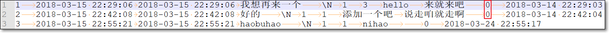
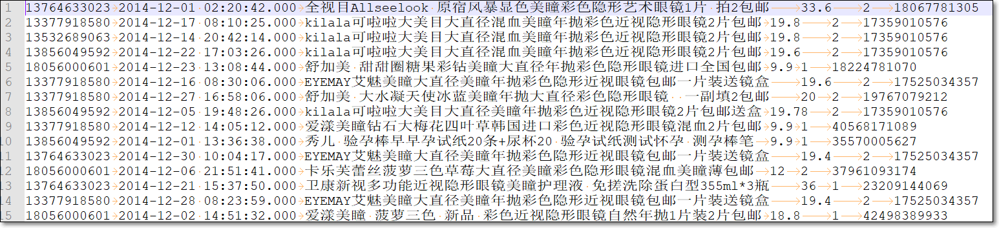
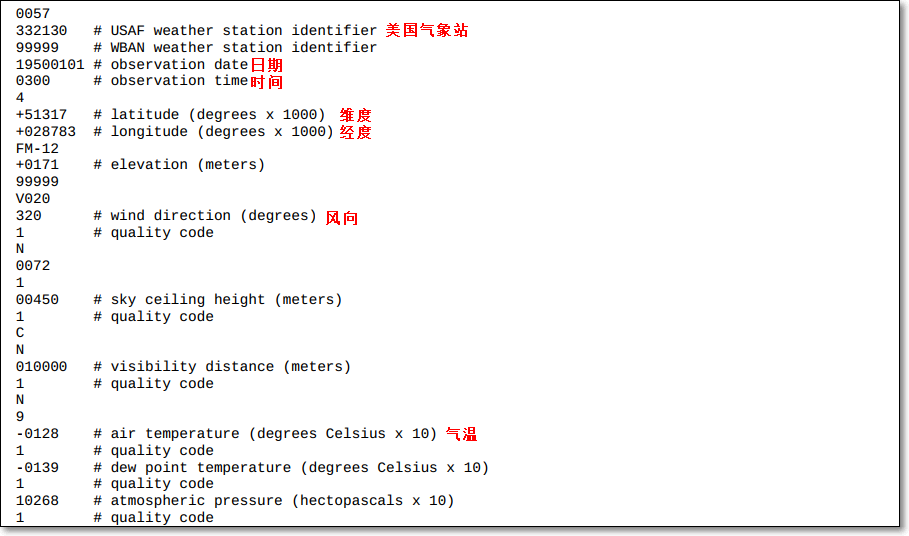

MapReduce编程模型
1. 自定义OutputFormat
1.1 需求
现在有一些订单的评论数据，要将订单的好评与其它级别的评论（中评、差评）进行区分开来，将最终的数据分开到不同的文件夹下面去
数据第九个字段表示评分等级：0 好评，1 中评，2 差评

1.2 逻辑分析
- 程序的关键点是在一个mapreduce程序中，根据数据的不同(好评的评级不同)，输出两类结果到不同目录
- 这类灵活的输出，需求通过自定义OutputFormat来实现
1.3 实现要点
- 在mapreduce中访问外部资源
- 自定义OutputFormat类，覆写getRecordWriter()方法
- 自定义RecordWriter类，覆写具体输出数据的方法write()
1.4 MR代码
- 自定义OutputFormat
1 | package com.kaikeba.hadoop.outputformat; |
- main方法
1 | package com.kaikeba.hadoop.outputformat; |
1.5 总结
- 自定义outputformat
- 泛型与reduce输出的键值对类型保持一致
- 覆写getRecordWriter()方法
自定义RecordWriter
- 泛型与reduce输出的键值对类型保持一致
- 覆写具体输出数据的方法write()、close()
main方法
- job.setOutputFormatClass使用自定义在输出类
2. 二次排序
2.1 需求
数据：有一个简单的关于员工工资的记录文件salary.txt
每条记录如下，有3个字段，分别表示name、age、salary
nancy 22 8000

使用MR处理记录，实现结果中
- 按照工资从高到低的降序排序
- 若工资相同，则按年龄升序排序
2.2 逻辑分析
利用MR中key具有可比较的特点
MapReduce中，根据key进行分区、排序、分组
有些MR的输出的key可以直接使用hadoop框架的可序列化可比较类型表示，如Text、IntWritable等等，而这些类型本身是可比较的；如IntWritable默认升序排序
但有时，使用MR编程，输出的key，若使用hadoop自带的key类型无法满足需求
- 此时，需要自定义的key类型（包含的是非单一信息，如此例包含工资、年龄）；
- 并且也得是可序列化、可比较的
需要自定义key，定义排序规则
- 实现：按照人的salary降序排序，若相同，则再按age升序排序；若salary、age相同，则放入同一组
2.3 MR代码
- 详见工程代码
- 自定义key类型Person类
1 | package com.kaikeba.hadoop.secondarysort; |
- main类、mapper、reducer
1 | package com.kaikeba.hadoop.secondarysort; |
2.4 总结
- 如果MR时，key的排序规则比较复杂，比如需要根据字段1排序，若字段1相同，则需要根据字段2排序…，此时，可以使用自定义key实现
- 将自定义的key作为MR中，map输出的key的类型（reduce输入的类型）
- 自定义的key
- 实现WritableComparable接口
- 实现compareTo比较方法
- 实现write序列化方法
- 实现readFields反序列化方法
3. 自定义分组求topN
3.1 需求
现有一个淘宝用户订单历史记录文件；每条记录有6个字段，分别表示
- userid、datetime、title商品标题、unitPrice商品单价、purchaseNum购买量、productId商品ID

现使用MR编程，求出每个用户、每个月消费金额最多的两笔订单，花了多少钱
- 所以得相同用户、同一个年月的数据，分到同一组
3.2 逻辑分析
- 根据文件格式，自定义JavaBean类OrderBean
- 实现WritableComparable接口
- 包含6个字段分别对应文件中的6个字段
- 重点实现compareTo方法
- 先比较userid是否相等；若不相等，则userid升序排序
- 若相等，比较两个Bean的日期是否相等；若不相等，则日期升序排序
- 若相等，再比较总开销，降序排序
- 实现序列化方法write()
- 实现反序列化方法readFields()
- 自定义分区类
- 继承Partitioner类
- getPartiton()实现，userid相同的，处于同一个分区
- 自定义Mapper类
- 输出key是当前记录对应的Bean对象
- 输出的value对应当前下单的总开销
- 自定义分组类
- 决定userid相同、日期（年月）相同的记录，分到同一组中，调用一次reduce()
- 自定义Reduce类
- reduce()中求出当前一组数据中，开销头两笔的信息
- main方法
- job.setMapperClass
- job.setPartitionerClass
- job.setReducerClass
- job.setGroupingComparatorClass
3.3 MR代码
详细代码见代码工程
- OrderBean
1 | package com.kaikeba.hadoop.grouping; |
- MyPartitioner
1 | package com.kaikeba.hadoop.grouping; |
- MyMapper
1 | package com.kaikeba.hadoop.grouping; |
- MyReducer
1 | package com.kaikeba.hadoop.grouping; |
- MyGroup
1 | package com.kaikeba.hadoop.grouping; |
- CustomGroupingMain
1 | package com.kaikeba.hadoop.grouping; |
- DateUtils
1 | package com.kaikeba.hadoop.grouping; |
3.4 总结
- 要实现自定义分组逻辑
- 一般会自定义JavaBean，作为map输出的key
- 实现其中的compareTo方法，设置key的比较逻辑
- 实现序列化方法write()
- 实现反序列化方法readFields()
- 自定义mapper类、reducer类
- 自定义partition类，getPartition方法，决定哪些key落入哪些分区
- 自定义group分组类，决定reduce阶段，哪些kv对，落入同一组，调用一次reduce()
- 写main方法，设置自定义的类
- job.setMapperClass
- job.setPartitionerClass
- job.setReducerClass
- job.setGroupingComparatorClass
- 一般会自定义JavaBean，作为map输出的key
4. MapReduce数据倾斜(20分钟)
- 什么是数据倾斜？
- 数据中不可避免地会出现离群值（outlier），并导致数据倾斜。这些离群值会显著地拖慢MapReduce的执行。
常见的数据倾斜有以下几类：
- 数据频率倾斜——某一个区域的数据量要远远大于其他区域。比如某一个key对应的键值对远远大于其他键的键值对。
- 数据大小倾斜——部分记录的大小远远大于平均值。
在map端和reduce端都有可能发生数据倾斜
- 在map端的数据倾斜可以考虑使用combine
- 在reduce端的数据倾斜常常来源于MapReduce的默认分区器
数据倾斜会导致map和reduce的任务执行时间大为延长，也会让需要缓存数据集的操作消耗更多的内存资源
4.1 如何诊断是否存在数据倾斜（10分钟）
- 如何诊断哪些键存在数据倾斜？
- 发现倾斜数据之后，有必要诊断造成数据倾斜的那些键。有一个简便方法就是在代码里实现追踪每个键的最大值。
- 为了减少追踪量，可以设置数据量阀值，只追踪那些数据量大于阀值的键，并输出到日志中。实现代码如下
- 运行作业后就可以从日志中判断发生倾斜的键以及倾斜程度；跟踪倾斜数据是了解数据的重要一步，也是设计MapReduce作业的重要基础
1 | package com.kaikeba.hadoop.dataskew; |
4.2 减缓数据倾斜
Reduce数据倾斜一般是指map的输出数据中存在数据频率倾斜的状况，即部分输出键的数据量远远大于其它的输出键
如何减小reduce端数据倾斜的性能损失？常用方式有：
一、自定义分区
基于输出键的背景知识进行自定义分区。
例如，如果map输出键的单词来源于一本书。其中大部分必然是省略词（stopword）。那么就可以将自定义分区将这部分省略词发送给固定的一部分reduce实例。而将其他的都发送给剩余的reduce实例。
二、Combine
- 使用Combine可以大量地减小数据频率倾斜和数据大小倾斜。
- combine的目的就是聚合并精简数据。
三、抽样和范围分区
Hadoop默认的分区器是HashPartitioner，基于map输出键的哈希值分区。这仅在数据分布比较均匀时比较好。在有数据倾斜时就很有问题。
使用分区器需要首先了解数据的特性。TotalOrderPartitioner中，可以通过对原始数据进行抽样得到的结果集来预设分区边界值。
- TotalOrderPartitioner中的范围分区器可以通过预设的分区边界值进行分区。因此它也可以很好地用在矫正数据中的部分键的数据倾斜问题。
四、数据大小倾斜的自定义策略
在map端或reduce端的数据大小倾斜都会对缓存造成较大的影响，乃至导致OutOfMemoryError异常。处理这种情况并不容易。可以参考以下方法。
设置mapreduce.input.linerecordreader.line.maxlength来限制RecordReader读取的最大长度。
- RecordReader在TextInputFormat和KeyValueTextInputFormat类中使用。默认长度没有上限。
5. MR调优
- 见后续文章
6. 抽样、范围分区
6.1 数据
数据：气象站气象数据，来源美国国家气候数据中心（NCDC）（1900-2000年数据，每年一个文件）
- 气候数据record的格式如下

6.2 需求
- 对气象数据，按照气温进行排序（气温符合正太分布）
6.3 实现方案
三种实现思路
- 方案一：
- 设置一个分区，即一个reduce任务；在一个reduce中对结果进行排序；
- 失去了MR框架并行计算的优势
- 方案二：
- 自定义分区，人为指定各温度区间的记录，落入哪个分区；如分区温度边界值分别是-15、0、20，共4个分区
- 但由于对整个数据集的气温分布不了解，可能某些分区的数据量大，其它的分区小，数据倾斜
- 方案三：
- 通过对键空间采样
- 只查看一小部分键，获得键的近似分布（好温度的近似分布）
- 进而据此结果创建分区，实现尽可能的均匀的划分数据集；
- Hadoop内置了采样器；InputSampler
- 方案一：
6.4 MR代码
分两大步
一、先将数据按气温对天气数据集排序。结果存储为sequencefile文件，气温作为输出键，数据行作为输出值
代码
此代码处理原始日志文件
结果用SequenceFile格式存储；
温度作为SequenceFile的key；记录作为value
1 | package com.kaikeba.hadoop.totalorder; |
二、全局排序
使用全排序分区器TotalOrderPartitioner
1 | package com.kaikeba.hadoop.totalorder; |
6.5 总结
对大量数据进行全局排序
先使用InputSampler.Sampler采样器，对整个key空间进行采样，得到key的近似分布
保存到key分布情况文件中
使用TotalOrderPartitioner，利用上边的key分布情况文件，进行分区；每个分区的数据量近似，从而防止数据倾斜
注意
- 描述MR的shuffle全流程（面试）
- 搭建MAVEN工程，统计词频，并提交集群运行，查看结果
- 利用搜狗数据，找出所有独立的uid并写入HDFS
- 利用搜狗数据，找出所有独立的uid出现次数，并写入HDFS，并要求使用Map端的Combine操作
- 谈谈什么是数据倾斜，什么情况会造成数据倾斜？（面试）
- 对MR数据倾斜，如何解决？（面试）